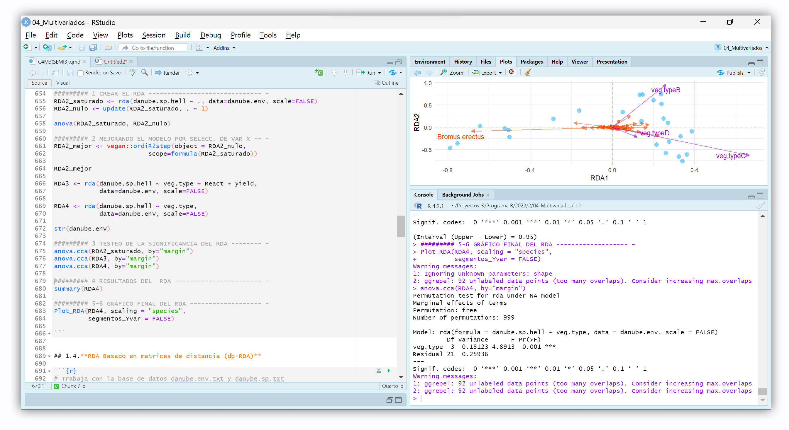
Fundamentos de
programación con R
Track: Estadística y programación con R
Irwing S. Saldaña

MSc(c) Blgo. Irwing S. Saldaña
ILCID - masterX (Perú)
Bienvenidos
Con este curso:
- Tendrás tu primer contacto con la programación orientada a ciencias.
- Aprenderás la sintaxis básica de R.
- Crearás funciones y aprenderás sobre ciclos.
- Harás tus primeros gráficos con ggplot2.
- Al final, crearás una función para análisis exploratorio con R.
Este será tu primer paso con R, un lenguaje de programación con un gran soporte de la comunidad de desarrollo, y una excelente IDE (RStudio):
Además, de la mejor herramienta de graficación estadística actual, la librería ggplot2:
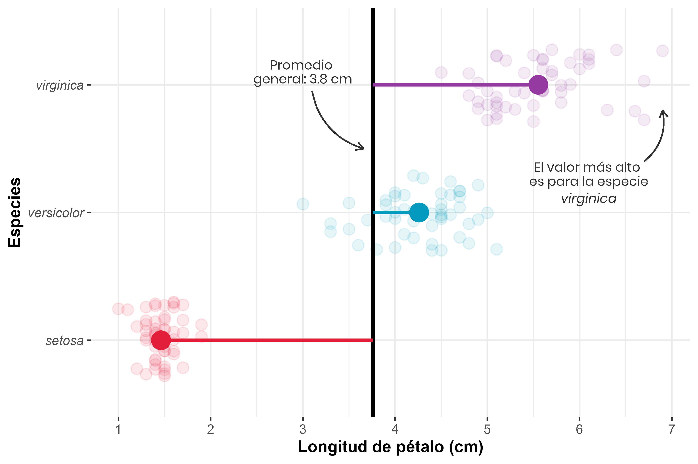
Iniciando con R y RStudio
Clase 1
Sección 1. Instalación de R,
RStudio y utilitarios
1.1. Instalación de R
- Busca en Google el término “R project” y el sistema operativo de interés, como: “R project MacOs”. En las siguientes diapositivas encontrarán los enlaces directos.
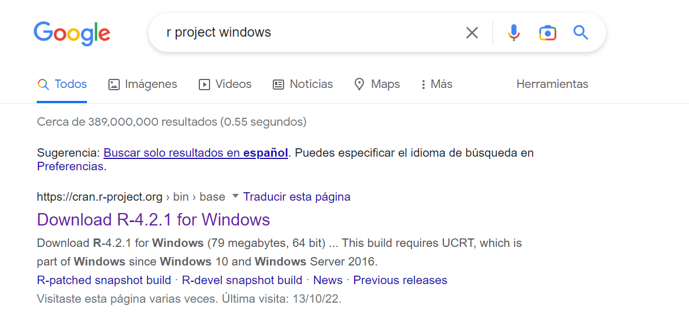
Instalación de R en Windows
- Siempre que necesites, podrás ingresar a este link https://cran.r-project.org/bin/windows/base/ para ver la versión más reciente de R para Windows.
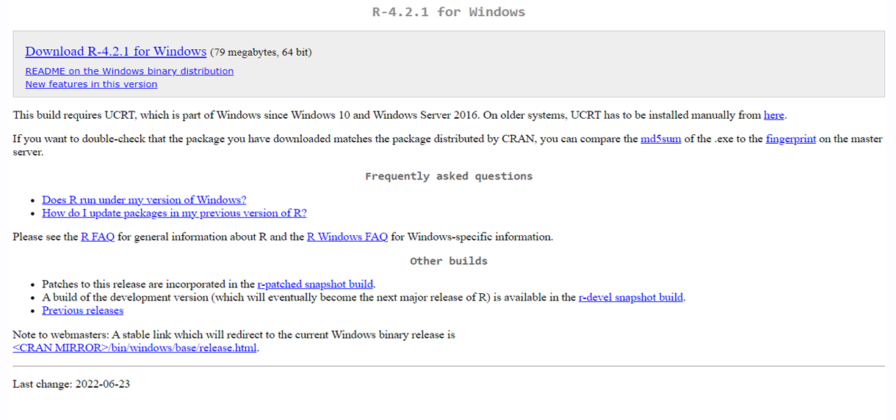
Instalación de Rtools (solo Windows)
- Este utilitario es un compilador, y es indispensable para instalación en Windows. Encontrarás las últimas versiones aquí https://cran.r-project.org/bin/windows/Rtools/. Asegúrate de instalar la versión más reciente.
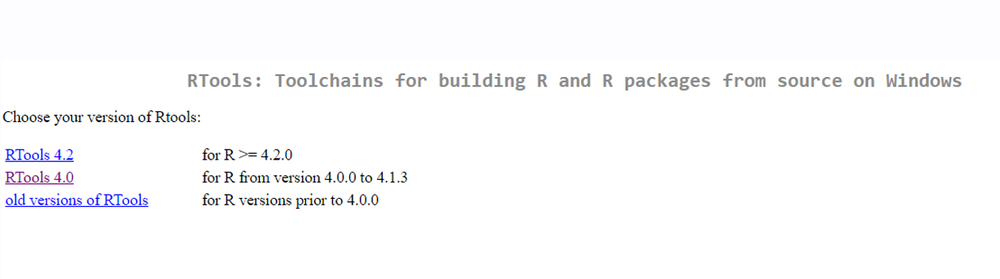
Instalación de R en macOS
- En macOS, este link te mostrará siempre la versión más reciente con extensión .pkg https://cran.r-project.org/bin/macosx/.
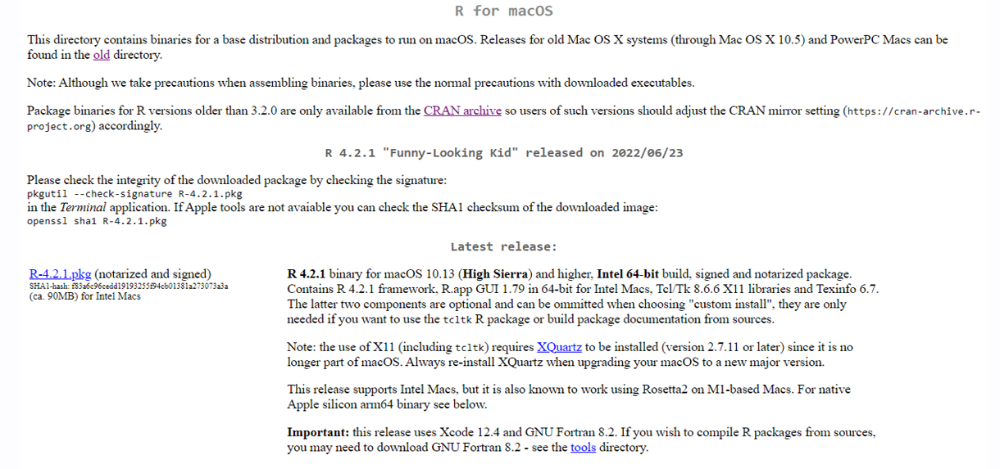
Instalación de XQuartz (solo macOS)
- Este utilitario es un compilador que ya viene instalado en las últimas versiones de macOS, pero es bueno instalarlo por si no está en el sistema. Instala la última versión aquí https://cran.r-project.org/bin/windows/Rtools/.
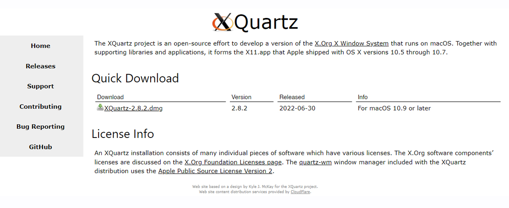
Instalación de R en Ubuntu (Linux)
- Ejecuta los siguientes códigos en la terminal de comandos de Ubuntu:
1.2. Instalación de RStudio (todos los Sistemas Operativos)
- Existe un único link https://www.rstudio.com/products/rstudio/download/#download para descargar la última versión de RStudio.
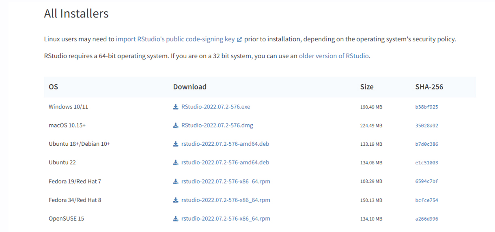
Sección 2. Primer contacto con R
2.1. Cómo ejecutar código
- La ejecución de código en R se hace presionando en el teclado
control + enter(Windows/Ubuntu) ocommand + enter(macOS).
2.2. R como una calculadora
- R nos permite realizar operaciones matemáticas con código. La cosa más sencilla para hacer en R es sumar.
| Operador | Operación | Ejemplo | Resultado |
|---|---|---|---|
+ |
Suma | 10 + 3 |
13.000 |
- |
Resta | 10 - 3 |
7.000 |
* |
Multiplicación | 10 * 3 |
30.000 |
/ |
División | 10 / 3 |
3.333 |
^ |
Potencia | 10 ^ 3 |
1000.000 |
%/% |
División entera (parte entera) | 10 %% 3 |
3.000 |
%% |
Residuo de dividir un número entre otro | 10 %/% 3 |
1.000 |
2.3. Comentar código
- Cuando escribas código en R, podrás dejar comentarios con el símbolo
#. - Todo aquello escrito a la derecha de
#no será interpretado por R.
Sección 3. Fundamentos de programación
3.1. Representación de la información
- Caracteres alfabéticos: letras mayúsculas y minúsculas del alfabeto inglés.
- Caracteres numéricos: dígitos del sistema de numeración decimal.
- Caracteres especiales: símbolos matemáticos y ortográficos adicionales.
ASCII
Los símbolos mostrados se almacenan en forma de bits utilizando una codificación.
- Código ASCII (American Standard Code for Information Interchange): usa 7 bits \(2^7 = 128\) caracteres diferentes. Aunque ya se ha extendido a 8 bits = 256 caracteres, para incluir símbolos en español.

Encoding UTF-8
- Código Unicode: utiliza 16 bits \(2^{16} = 65536\) símbolos, para incluir caracteres de idiomas como chino, japonés, árabe, etc.
Una forma de codificación unicode es UTF-8 (8-bit Unicode Transformation Format). Para que funcionen caracteres en español en sus archivos generados en RStudio, hay que especificar que se utilice UTF-8.
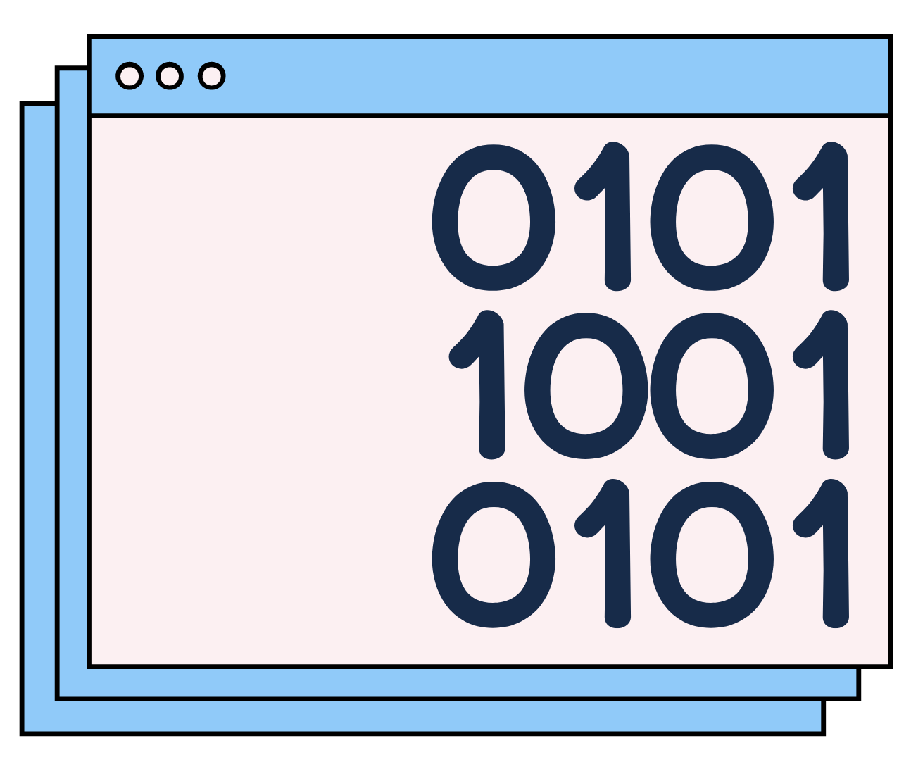
Valores numéricos interpretados por R
- Números enteros: números sin decimales.
- Números reales: números con decimales.
- Números reales como notación científica: para decimales pequeños, R activa la opción
options(scipen = 1)que los convierte en números con notación científica. El número1.99e-4equivale a \(1.99\times10^{-4}\) o \(0.000119\). Para que se deje de mostrar notación científica, se debe desactivar la opción conoptions(scipen = 999).
Valores boleanos y especiales interpretados por R
Los símbolos de verdadero y falso son fundamentales en R. Estos son resultado de operaciones lógicas (veremos ello más adelante).
TRUE: verdadero, equivalente al valor numérico de 1.FALSE: falso, equivalente al valor numérico de 0.NULL: como símbolo que representa el vacío o ausencia de información.NA: valores perdidos (celdas en blanco en una tabla).
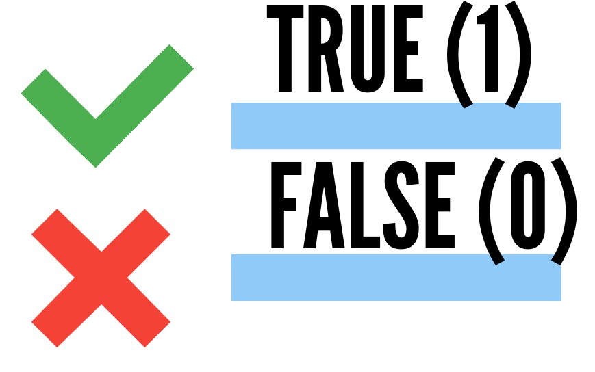
Valores de texto interpretados por R
Cualquier carácter colocado entre comillas simples 'texto' o dobles "texto" será interpredado por R como verdadero texto, y no será ejecutado como una órden.
Sepal.Length Sepal.Width Petal.Length Petal.Width Species
1 5.1 3.5 1.4 0.2 setosa
2 4.9 3.0 1.4 0.2 setosa
3 4.7 3.2 1.3 0.2 setosa
4 4.6 3.1 1.5 0.2 setosa
5 5.0 3.6 1.4 0.2 setosa
6 5.4 3.9 1.7 0.4 setosa[1] "head(iris)"3.2. Concepto de algoritmo
Un algoritmo es un método para resolver un problema. Es la serie de instrucciones para obtener un resultado.
\[\text{Algoritmos} + \text{Estructuras de datos} = \text{Programas}\]
Algoritmo para crear algoritmos efectivos:
- Diseño de un algoritmo: secuencia de órdenes no ambiguas y claras.
- Codificación del algoritmo: crear el código en el lenguaje preferido (R).
- Ejecución y validación: revisión del resultado del algoritmo.
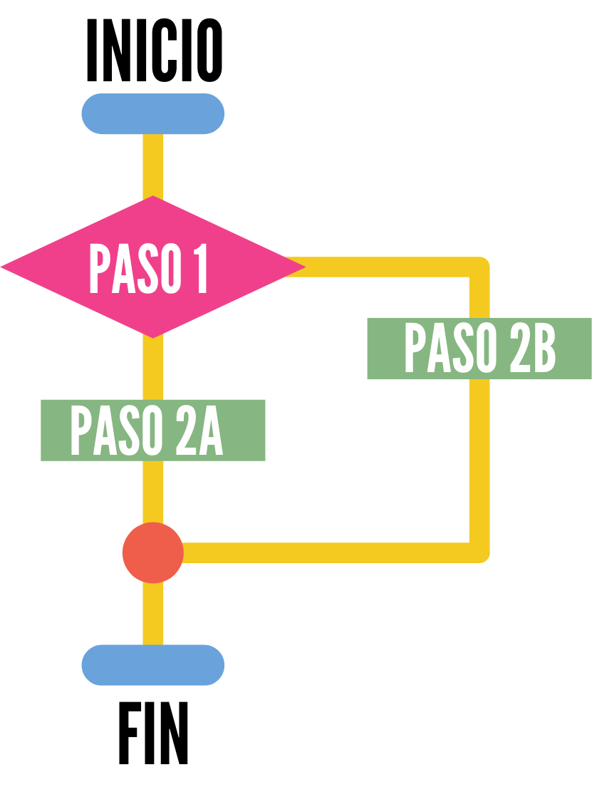
Paso 1: Diseño de algoritmos con pseudocódigo
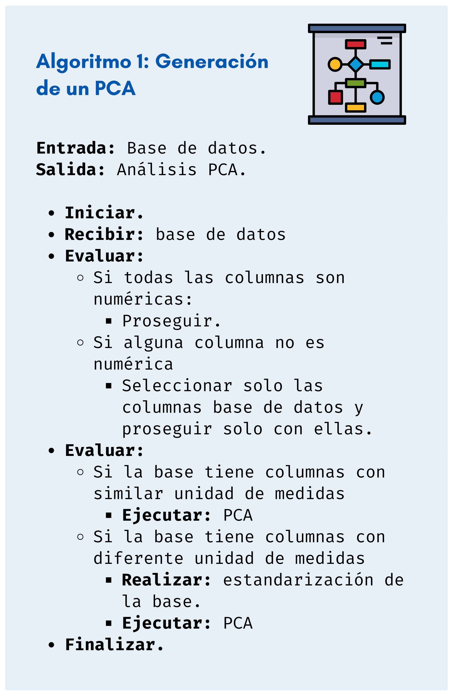
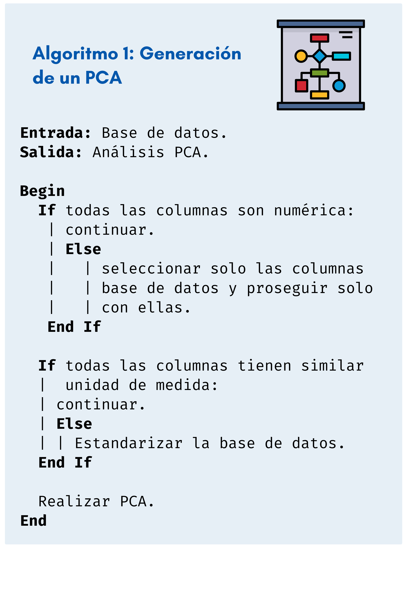
Paso 1: Diseño de algoritmos con pseudocódigo
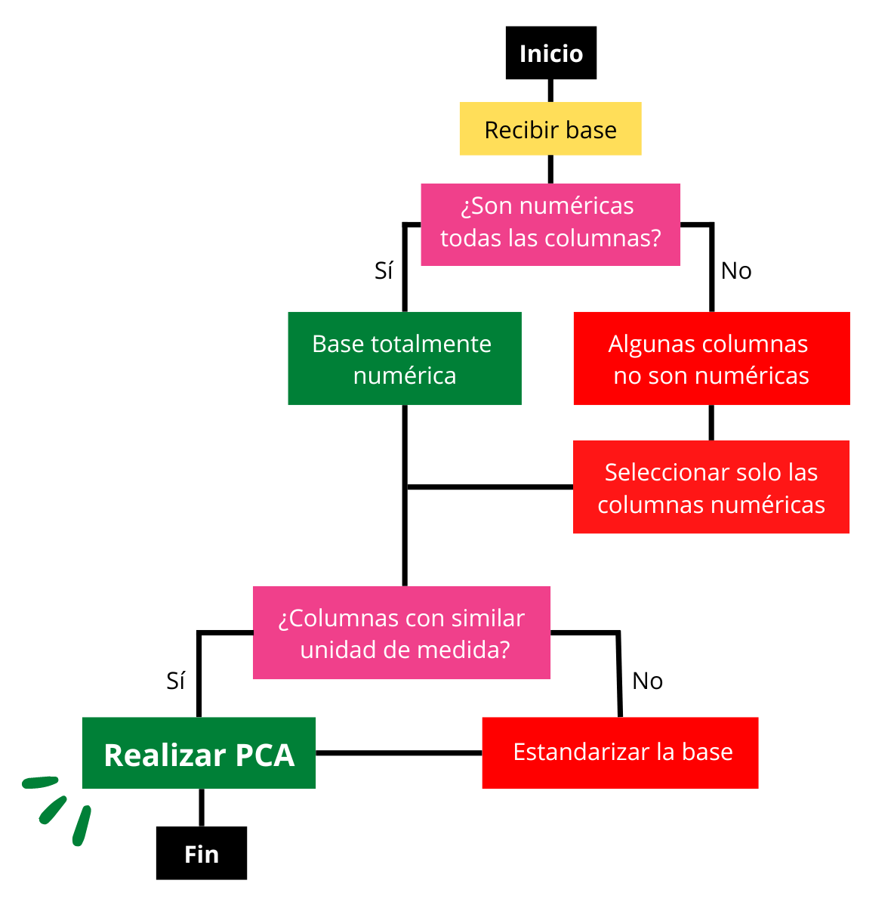
Paso 2: Codificación del algoritmo
alg_PCA <- function(base, grupo=NULL) {
# Librerías
require(tidyverse)
require(factoextra)
# Primer if else: testeo base numérica
if (all(apply(base, 2, is.numeric))) {
base1 <- base
} else if (!all(apply(base, 2, is.numeric))) {
base1 <- base %>% select_if(is.numeric)
}
# Decisión del investigador para estandarizar
desvest <- apply(base1, 2, sd)
print(desvest)
respuesta <- readline(prompt = "Ingresa 1 para estandarizar la base, 2 para no estandarizar: ")
# Segundo if else: estandarización del PCA
# basado en respuesta del investigador
if (respuesta == 1) {
PCA <- prcomp(base1, scale = TRUE)
print(PCA)
cat("Revisión de la varianza explicada por cada componente principal","\n")
print(summary(PCA))
print(fviz_pca_biplot(PCA,col.var = "black",
habillage = grupo,
addEllipses = TRUE, repel = TRUE))
} else if (respuesta == 2) {
PCA <- prcomp(base1, scale = FALSE)
cat("Revisión de la varianza explicada por cada componente principal","\n")
print(summary(PCA))
print(fviz_pca_biplot(PCA,col.var = "black",
habillage = grupo,
addEllipses = TRUE, repel = TRUE))
}
}Paso 3: Ejecución y validación
Paso 3: Ejecución y validación
Revisión de la varianza explicada por cada componente principal
Importance of components:
PC1 PC2 PC3 PC4
Standard deviation 1.7084 0.9560 0.38309 0.14393
Proportion of Variance 0.7296 0.2285 0.03669 0.00518
Cumulative Proportion 0.7296 0.9581 0.99482 1.00000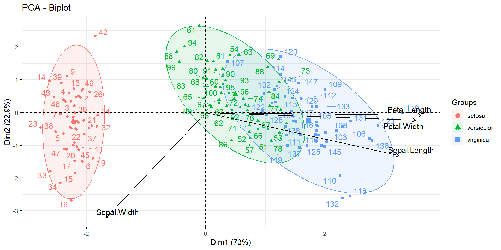
3.3. Lenguajes de programación
En el paso de codificación del algoritmo, se utilizan lenguajes de programación para comunicarse con la computadora. Existen:
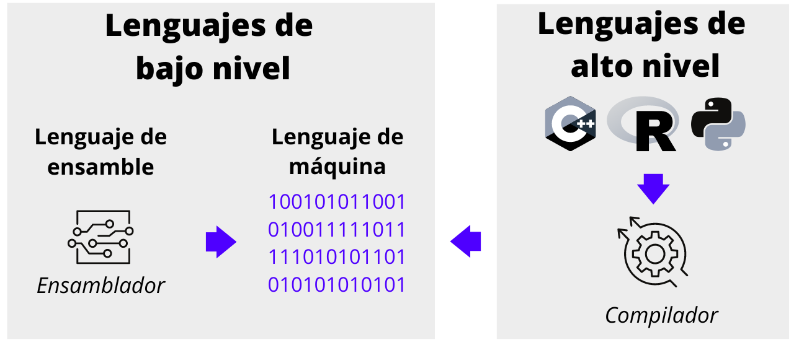
Lenguajes más frecuentes en ciencias
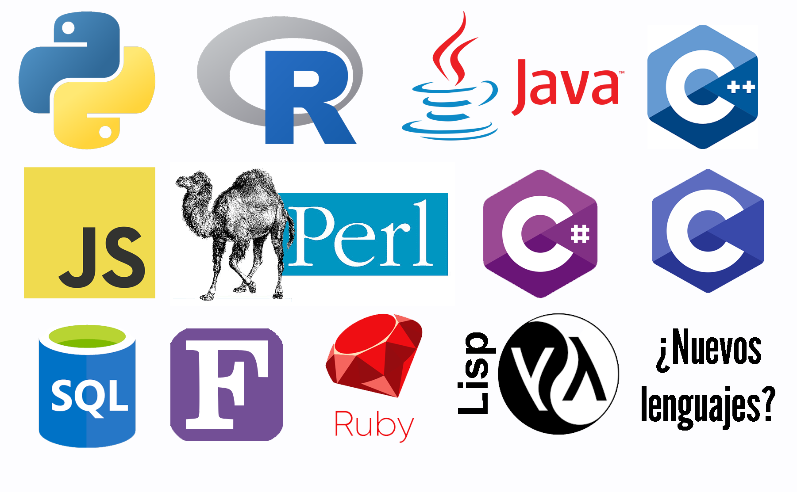
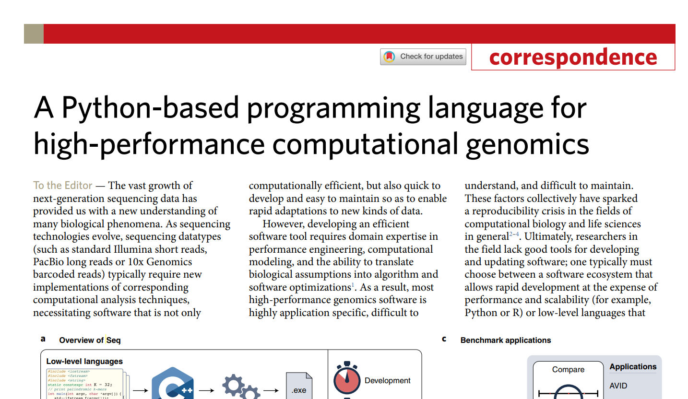
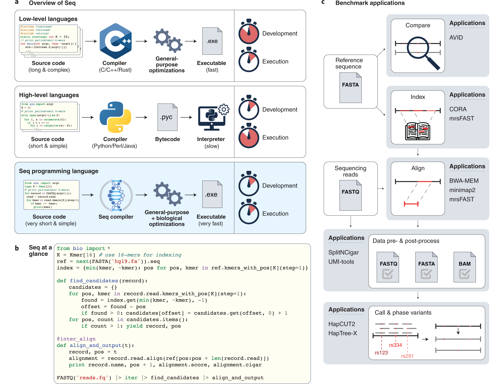
Fin

Fundamentos de R